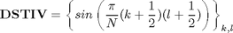
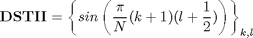
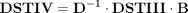
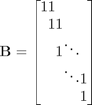
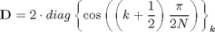
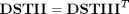
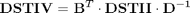
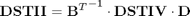

Relations between DST_IV and DST_II
Contents
Definitions
Result of transform is y=x*T, where y, x are row-vectors T is transform matrix
DST_IV matrix definition

N=8; DST4=sin(pi/N*((0:N-1)+1/2)'*((0:N-1)+1/2))
DST4 =
0.0980 0.2903 0.4714 0.6344 0.7730 0.8819 0.9569 0.9952
0.2903 0.7730 0.9952 0.8819 0.4714 -0.0980 -0.6344 -0.9569
0.4714 0.9952 0.6344 -0.2903 -0.9569 -0.7730 0.0980 0.8819
0.6344 0.8819 -0.2903 -0.9952 -0.0980 0.9569 0.4714 -0.7730
0.7730 0.4714 -0.9569 -0.0980 0.9952 -0.2903 -0.8819 0.6344
0.8819 -0.0980 -0.7730 0.9569 -0.2903 -0.6344 0.9952 -0.4714
0.9569 -0.6344 0.0980 0.4714 -0.8819 0.9952 -0.7730 0.2903
0.9952 -0.9569 0.8819 -0.7730 0.6344 -0.4714 0.2903 -0.0980
DST_II matrix definition

DST2=sin(pi/N*((0:N-1)+1)'*((0:N-1)+1/2))
DST2 =
0.1951 0.5556 0.8315 0.9808 0.9808 0.8315 0.5556 0.1951
0.3827 0.9239 0.9239 0.3827 -0.3827 -0.9239 -0.9239 -0.3827
0.5556 0.9808 0.1951 -0.8315 -0.8315 0.1951 0.9808 0.5556
0.7071 0.7071 -0.7071 -0.7071 0.7071 0.7071 -0.7071 -0.7071
0.8315 0.1951 -0.9808 0.5556 0.5556 -0.9808 0.1951 0.8315
0.9239 -0.3827 -0.3827 0.9239 -0.9239 0.3827 0.3827 -0.9239
0.9808 -0.8315 0.5556 -0.1951 -0.1951 0.5556 -0.8315 0.9808
1.0000 -1.0000 1.0000 -1.0000 1.0000 -1.0000 1.0000 -1.0000
Finding relations
We use already derived relation between DCTIII and DCTIV matrices

where


By using transposition relation between DSTII and DSTIII matrices [1]

we can express matrix of DSTIV transform through DSTII transform matrix

B=diag(ones(1,N))+diag(ones(1,N-1),1); D=2*diag(cos(pi/2/N*((0:N-1)+1/2)));
Check expression of DST_IV through DST_II
Check DSTIV matrix
B'*DST2*inv(D)
ans =
0.0980 0.2903 0.4714 0.6344 0.7730 0.8819 0.9569 0.9952
0.2903 0.7730 0.9952 0.8819 0.4714 -0.0980 -0.6344 -0.9569
0.4714 0.9952 0.6344 -0.2903 -0.9569 -0.7730 0.0980 0.8819
0.6344 0.8819 -0.2903 -0.9952 -0.0980 0.9569 0.4714 -0.7730
0.7730 0.4714 -0.9569 -0.0980 0.9952 -0.2903 -0.8819 0.6344
0.8819 -0.0980 -0.7730 0.9569 -0.2903 -0.6344 0.9952 -0.4714
0.9569 -0.6344 0.0980 0.4714 -0.8819 0.9952 -0.7730 0.2903
0.9952 -0.9569 0.8819 -0.7730 0.6344 -0.4714 0.2903 -0.0980
Check computation of DSTIII transform
x=randn(1,N); y=x*DST4 % true result y1=x*B'*DST2*inv(D) % compute DSTIV using DSTII transform
y =
2.9419 -1.0097 0.9790 3.4707 0.3799 -1.0055 2.0668 2.2381
y1 =
2.9419 -1.0097 0.9790 3.4707 0.3799 -1.0055 2.0668 2.2381
Check expression of DST_II through DST_IV

Check DSTIV matrix
inv(B')*DST4*D
ans =
0.1951 0.5556 0.8315 0.9808 0.9808 0.8315 0.5556 0.1951
0.3827 0.9239 0.9239 0.3827 -0.3827 -0.9239 -0.9239 -0.3827
0.5556 0.9808 0.1951 -0.8315 -0.8315 0.1951 0.9808 0.5556
0.7071 0.7071 -0.7071 -0.7071 0.7071 0.7071 -0.7071 -0.7071
0.8315 0.1951 -0.9808 0.5556 0.5556 -0.9808 0.1951 0.8315
0.9239 -0.3827 -0.3827 0.9239 -0.9239 0.3827 0.3827 -0.9239
0.9808 -0.8315 0.5556 -0.1951 -0.1951 0.5556 -0.8315 0.9808
1.0000 -1.0000 1.0000 -1.0000 1.0000 -1.0000 1.0000 -1.0000
Check computation of DSTIV transform
y=x*DST2 % true result y1=x*inv(B')*DST4*D % compute DSTIV using DSTII transform
y =
3.1918 -1.0852 2.7970 2.6310 -0.6952 0.4823 2.9646 -0.1100
y1 =
3.1918 -1.0852 2.7970 2.6310 -0.6952 0.4823 2.9646 -0.1100
Reference
[1] Markus Pueschel, Jose M.F. Moura. The Algebraic Approach to the Discrete Cosine and Sine Transforms and their Fast Algorithms SIAM Journal of Computing 2003, Vol. 32, No. 5, pp. 1280-1316.